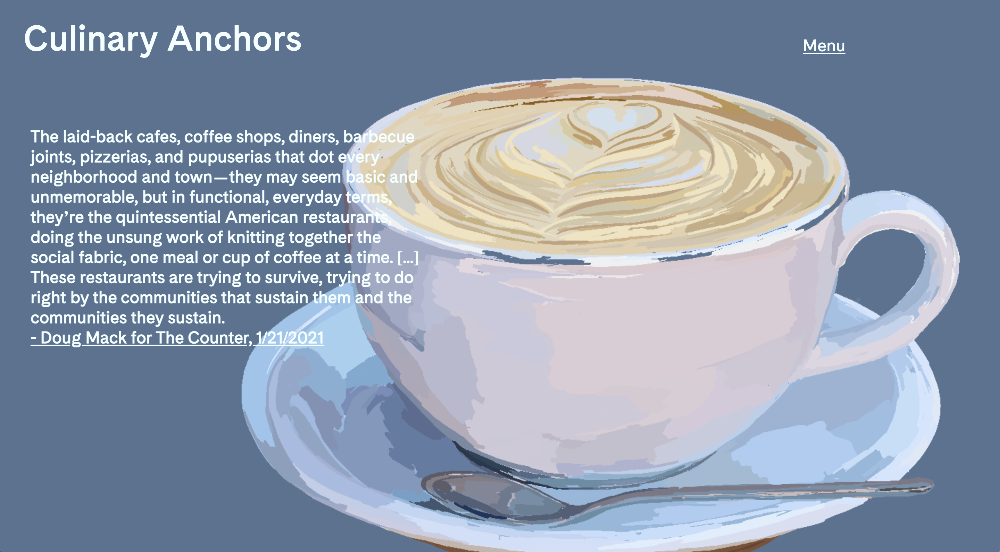

Through the pandemic, many of the places we love and spots I grew up going to were struggling or were forced to close due to the lack of business. Restaurants are culinary anchors for neighborhoods and bring together communities - which I strove to highlight through this project.
Visit site
